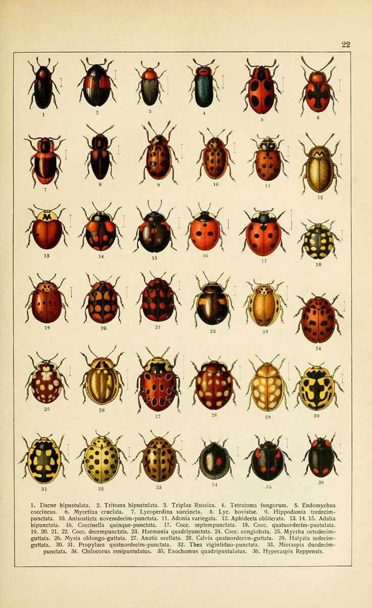
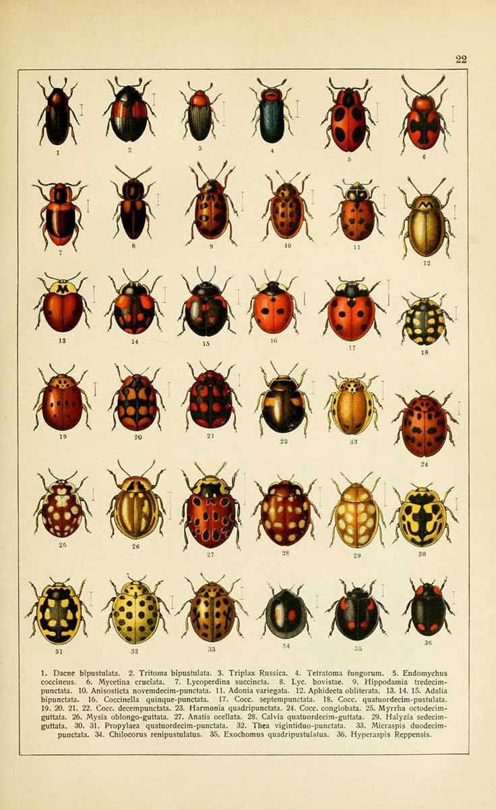

Random Thoughts
Welcome to the chaotic corner of my mind. This is where half-formed ideas, philosophical tangents, and shower epiphanies come to play. Some might be genius, most are probably not, but that's the beauty of unfiltered thinking.
Midnight Musings
What if déjà vu is just your brain buffering?
Are ghosts just outdated memories stuck in a glitchy simulation?
What if thoughts have mass and we're just all slowly sinking under their weight?

3 AM thoughts hit different
Shower Realisations
Who was the first person to look at a cow and think, 'I should drink whatever comes out of that'?
When you clean a vacuum, you become the vacuum cleaner.
Do atoms ever get tired of holding everything together?
Dream Logic
Had a dream where my dentist said I owed her 7,000 bees and I just... accepted that?
Was being hunted by a goose in a suit. The suit was burgundy. I remember that detail very clearly.
Weird Mirror Thoughts
My face looks different every time I see it. Am I just rendering inconsistently?
Update: Tried to debug my face. No success. Will try clearing cache (sleep).
What if mirrors are lying and we all actually look slightly better or worse in real life?
Note to self: Stop having existential crises in front of reflective surfaces.
Snack-Related Philosophy
Brain Food
1 serving per container
Serving size: 1 deep thought
Serving size: 1 deep thought
Existential Value
42%
Deep Questions
15g
Why do we call them cookies when we bake them?
5g
If we toast toast, what was it before?
10g
* The % Daily Value tells you how much existential crisis a food adds to your daily life.
Brain Food
1 serving per container
Serving size: 1 paradox
Serving size: 1 paradox
Mind-Bending Value
75%
Cereal Thoughts
20g
Is cereal a soup?
8g
When does breakfast become brunch?
12g
* Percentage of daily recommended confusion intake.
Brain Food
1 serving per container
Serving size: 1 revelation
Serving size: 1 revelation
Enlightenment Value
88%
Sandwich Dilemmas
25g
Is a hotdog a sandwich?
15g
Does an open-faced sandwich count as a sandwich?
10g
* Based on a 2000 thought per day diet.
This one actually kept me up for 45 minutes.
What mysteries await in the depths of your mind?